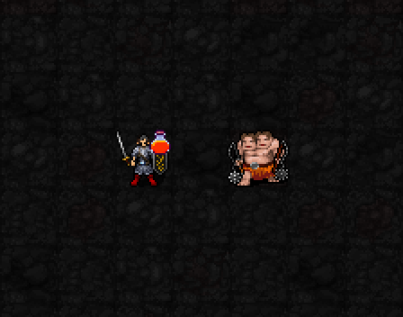
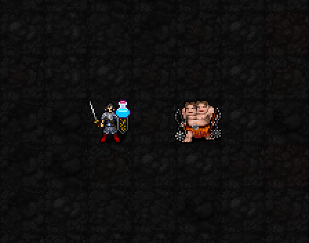
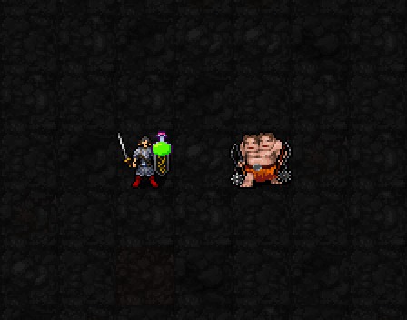

발열 시약이 실린 주문
추가 화염 피해 1d(4+⌊I/6⌋). 기도술 12에서는 1~6 피해.
적중 후 다음 시약: 냉각

발열 → 냉각 → 독성 → 반복
공격 주문이 실제 피해를 주면 자동으로 시약을 부착합니다. 시약 제조·투척·무기 도포 버튼은 제거했습니다.
해금: 신앙 ★(30) · 최소 기도술 제한 없음 · 시약 추가 MP/신앙 소모 없음.
캐릭터 옆 병 = 다음 시약 / 몹 옆 병 = 이미 붙은 표식
아래는 실제 마법의 다트 시전 전 → 표식 적용 → 시전 후 장면입니다. 기본 주문 MP1만 소모합니다. 각 클립은 해당 시약 순환 단계에서 시작하는 검토 장면입니다.
추가 화염 피해 1d(4+⌊I/6⌋). 기도술 12에서는 1~6 피해.
적중 후 다음 시약: 냉각

추가 냉기 피해 1d(3+⌊I/9⌋), 2턴간 이동 시간 +15%. 기도술 12에서는 1~4 피해.
적중 후 다음 시약: 독성

2턴 동안 매 턴 2+⌊I/12⌋ 독 피해. 기도술 12에서는 3씩 두 번.
적중 후 다음 시약: 발열

표식 유지 6턴. 냉각은 이동만 방해하며 공격·시전 속도는 그대로입니다. 독 면역 적도 원래 주문이 피해를 주면 반응용 표식은 남습니다.
한 주문의 다단히트는 같은 적에게 한 번만 적용하며, 광역 주문에는 같은 시약이 실립니다. 빗나감·0피해에는 순환하지 않습니다.
평타·마법봉·소환수·구름·독 후속 피해는 제외. 파괴의 구슬은 직접 시전한 투사체의 실제 적중 시 적용됩니다.
기도술 I는 현재 기도술 수치입니다. 영상은 기도술 12·신앙 60의 고정 시험 장면이며, 3성 반응이 없는 상태에서 1성 효과를 보여줍니다. 표시되는 피해식은 저항 적용 전 수치입니다.
3성의 공격 주문 사거리 +1·반응 피해 ×0.85, 5성 임계 실험의 MP6·신앙10·0.5턴·8턴/4회·재사용20턴도 코드에 적용했습니다. 현재 시각 검토는 1성부터 진행합니다.